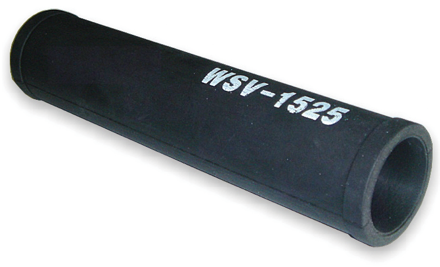
비닐보호 튜브
개폐축 파이프 표면에 끼워 사용하는 보호 부품입니다.
- 개폐축과의 마찰로 인한 비닐 손상 감소
- 파이프에 끼우는 간편한 설치 방식
- 부품번호
- WSV-1522 · WSV-1525
- 적용
- Ø22 · Ø25 파이프용
- 재질
- EPDM · 경도 40도
설치 환경과 용도에 따라 선택할 수 있는 롤업스타 편리부품입니다.

개폐축 파이프 표면에 끼워 사용하는 보호 부품입니다.
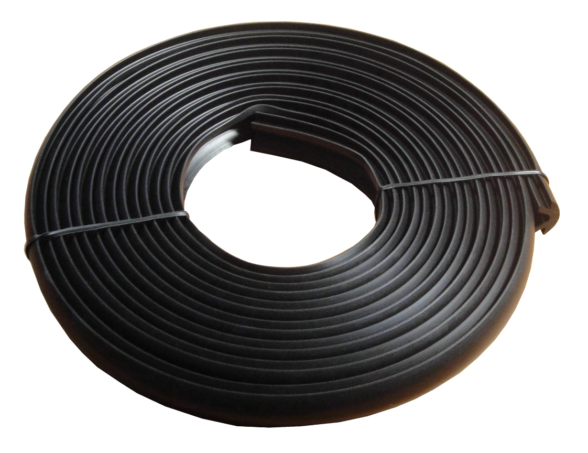
비닐을 고정하는 패드에 끼워 사용하는 보호 부품입니다.
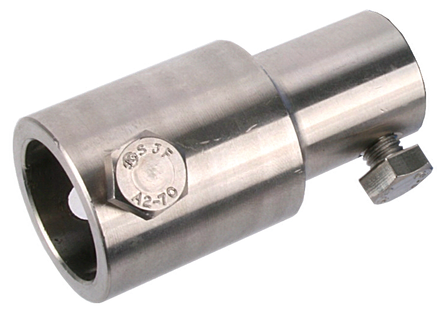
롤업스타와 개폐축 파이프를 연결하는 스테인리스 커플링입니다.
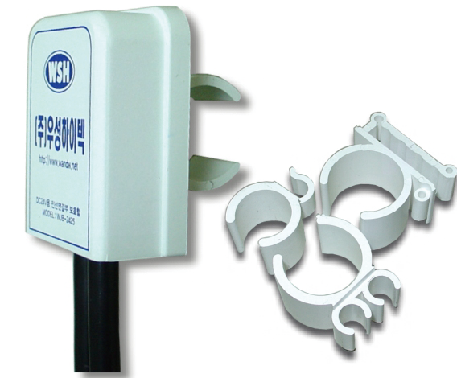
DC24V 전동개폐기의 전선 연결부를 보호합니다.
제품 사진과 함께 실제 설치 위치와 사용 형태를 확인할 수 있습니다.
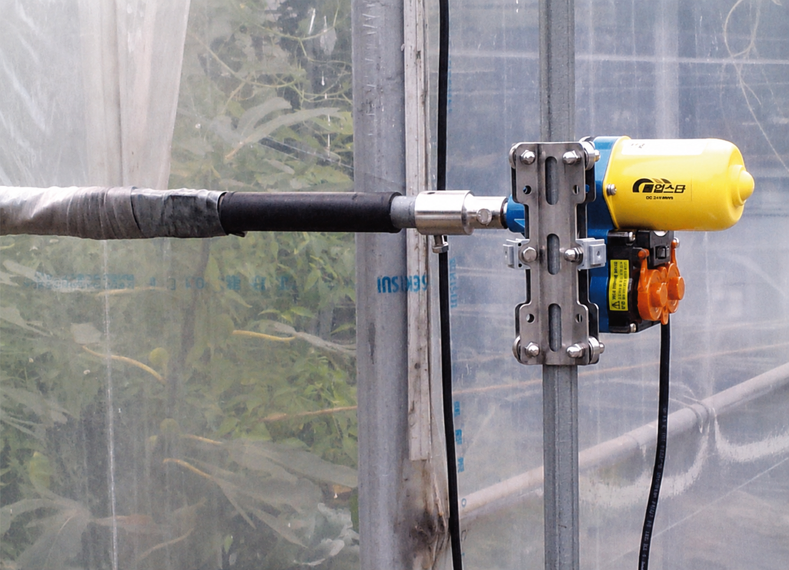
개폐축 파이프에 튜브를 끼워 피복재와 맞닿는 부분을 보호합니다.
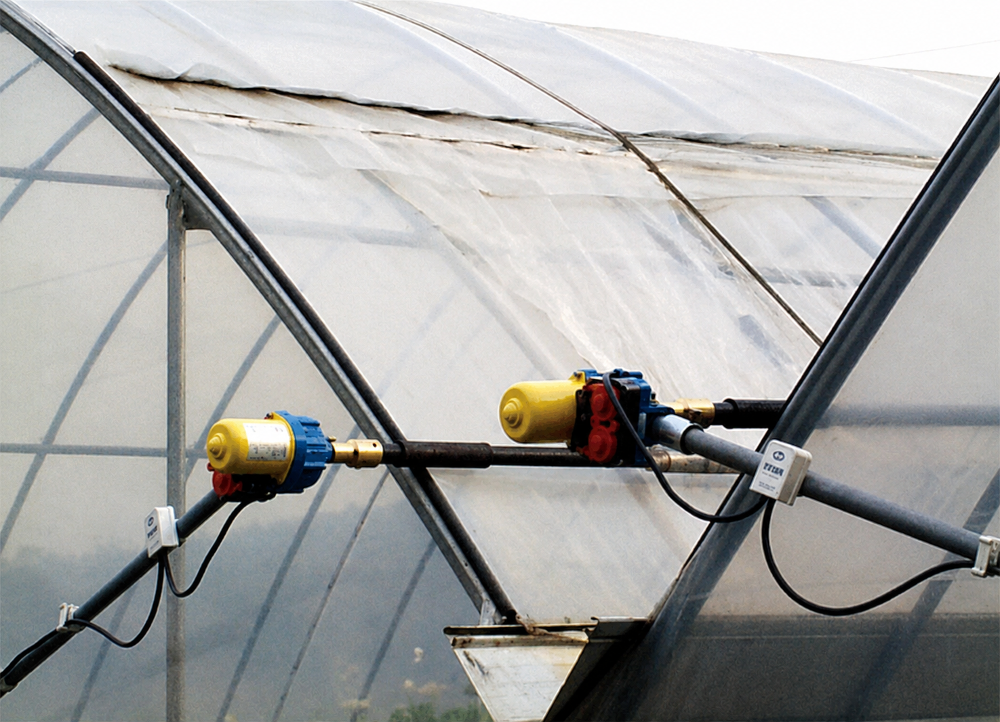
개폐축이 지나가는 구간에서 비닐의 마찰과 손상을 줄여줍니다.
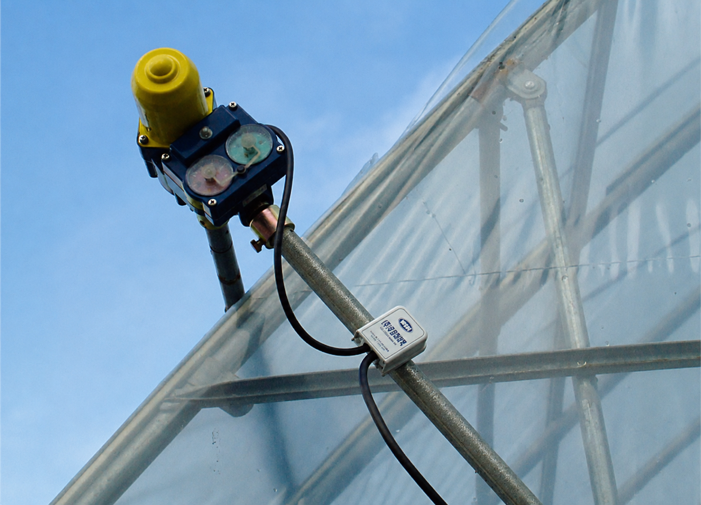
개폐기 전선 연결부를 정리하고 외부 환경으로부터 보호합니다.
가이드암을 설치할 공간이 확보되지 않는 장소에서 개폐기의 회전을 막고, 개폐축이 레일을 따라 안정적으로 이동하도록 안내합니다.
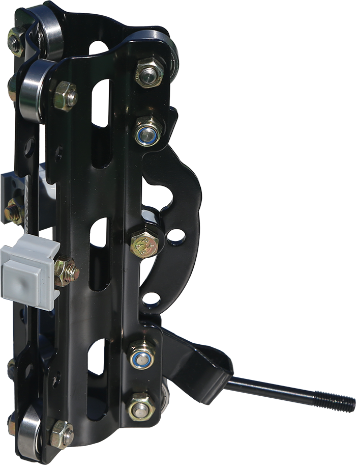
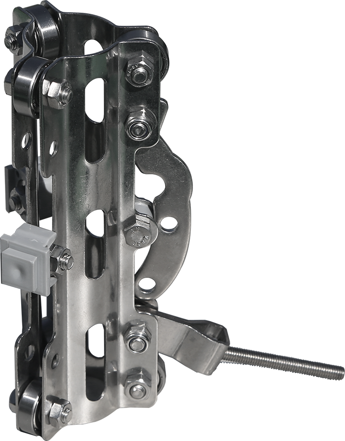
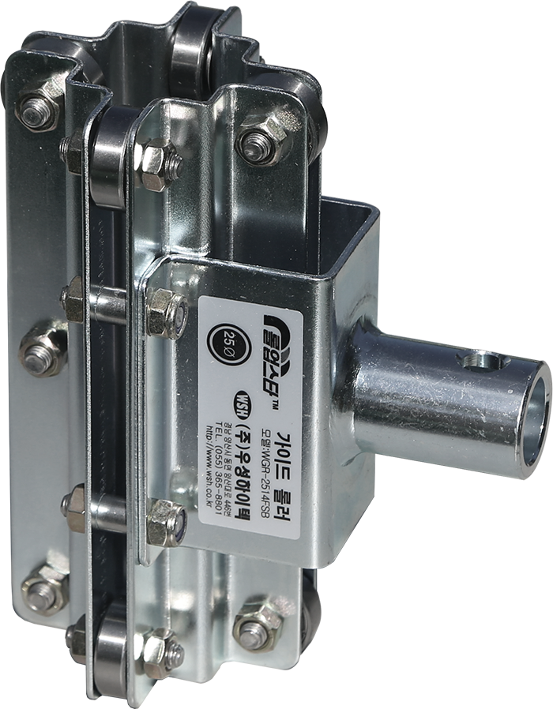
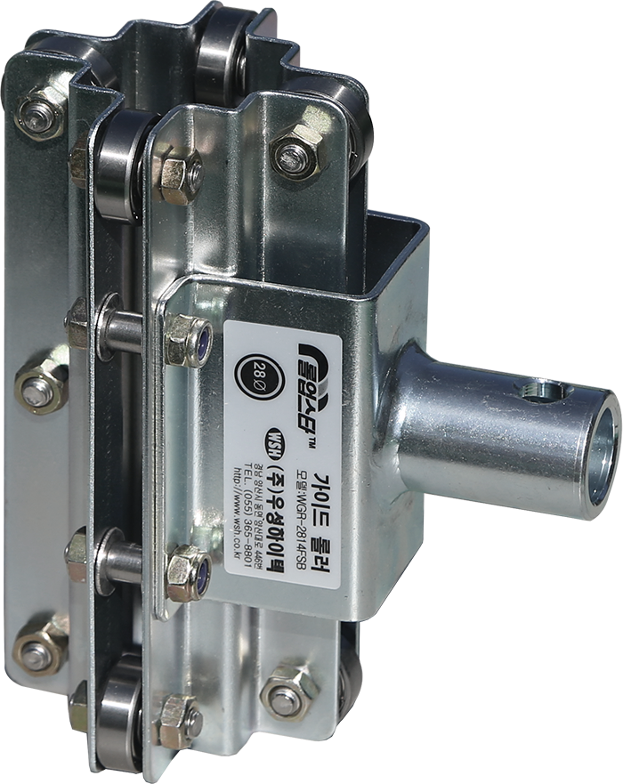
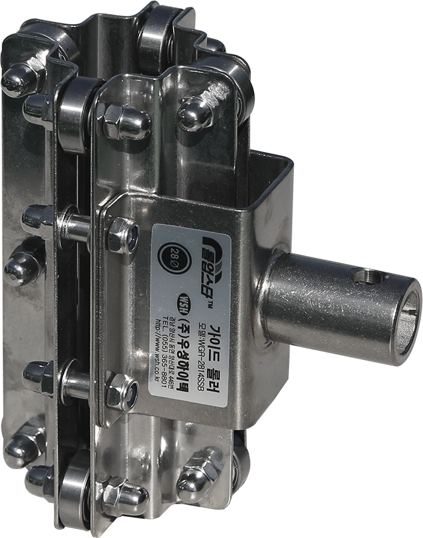
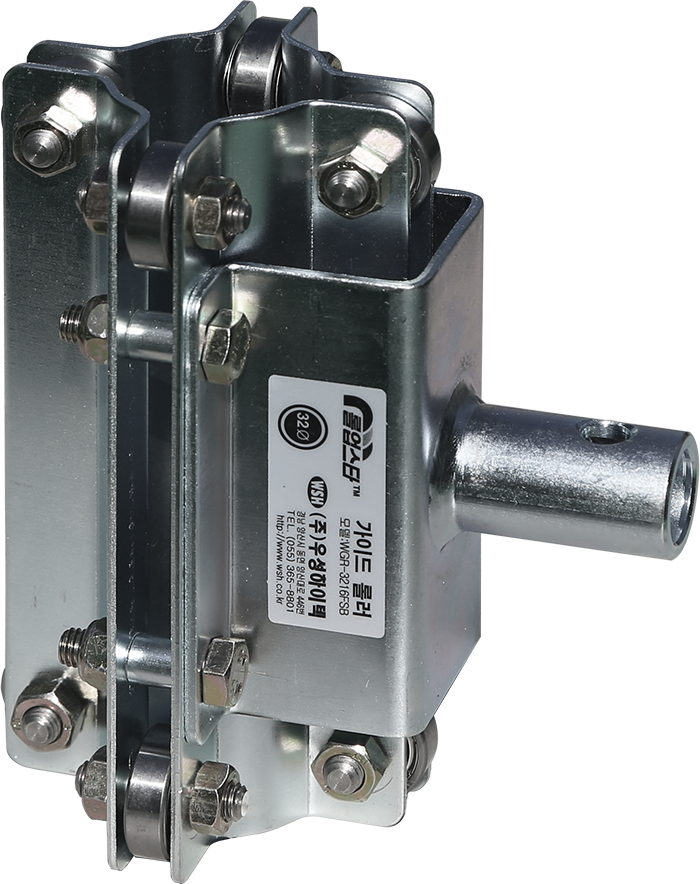
공통 사양 스테인리스 볼베어링 적용 · WNGR 제품 0.5kg, 그 외 제품 0.8kg
가이드롤러 종류에 따라 개폐기의 설치 방향과 연결 위치가 달라집니다.
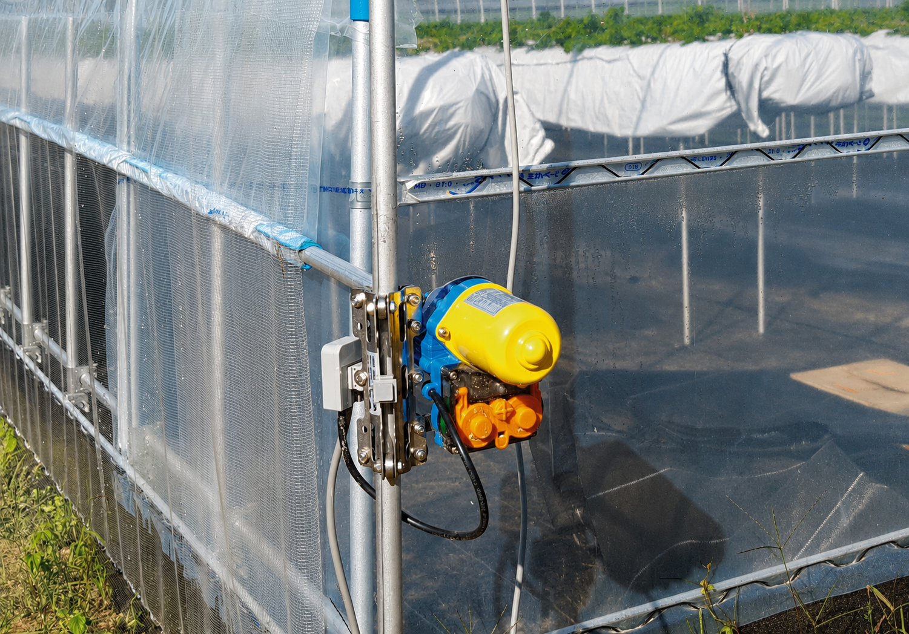
개폐기 방향을 그대로 유지한 상태로 전용 가이드롤러에 결합합니다.
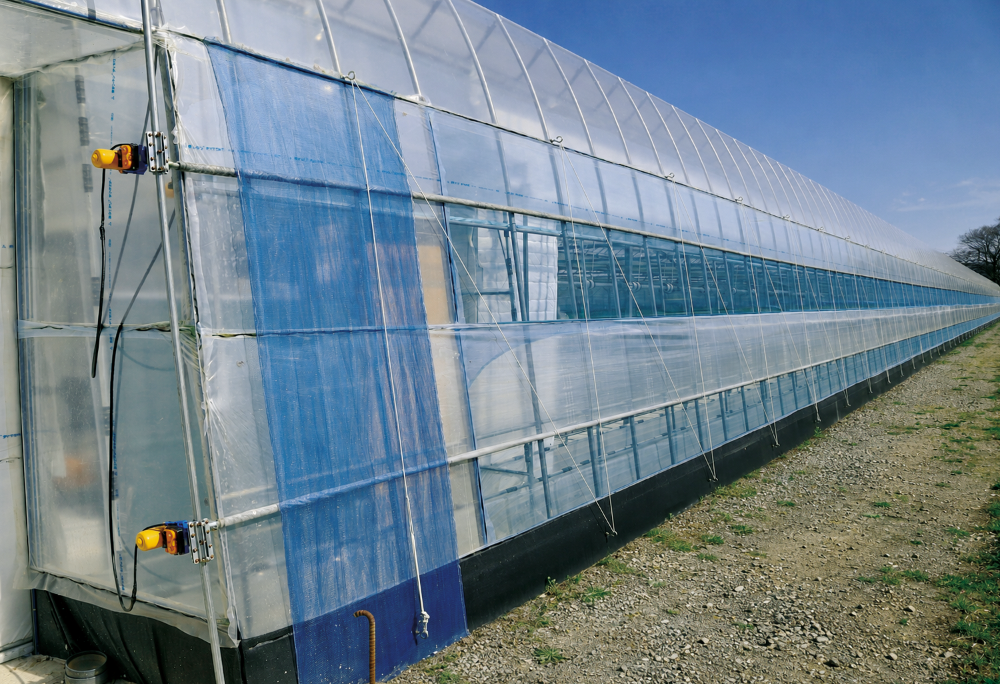
가이드암 쪽 연결부를 사용하므로 개폐기 본체가 90° 돌아간 방향으로 설치됩니다.
사진은 대표 설치 예시입니다. 현장 구조와 개폐축 방향에 맞는 제품을 선택하십시오.